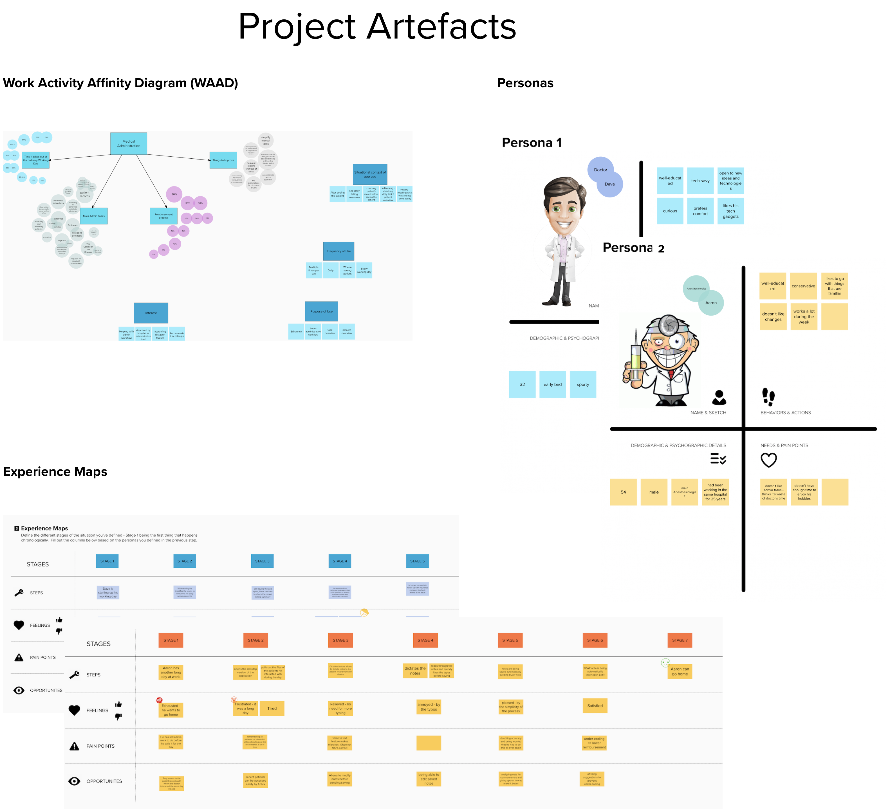

<!DOCTYPE html>
<html lang="en">

</html>

<head>
    <meta charset="UTF-8">
    <meta name="viewport" content="width=device-width, initial-scale=1.0">
    <meta http-equiv="X-UA-Compatible" content="ie=edge">

    <title>Barbora Dragunova</title>

    <!--Fav Icon-->
    <link rel="icon" href="./CSS/MyIcon.svg">

    <!--CSS Framework-->
    <link href="https://cdn.jsdelivr.net/npm/bootstrap@5.0.1/dist/css/bootstrap.min.css" rel="stylesheet"
        integrity="sha384-+0n0xVW2eSR5OomGNYDnhzAbDsOXxcvSN1TPprVMTNDbiYZCxYbOOl7+AMvyTG2x" crossorigin="anonymous">

    <!--My CSS-->
    <link rel="stylesheet" href="./CSS/style.css">

    <!--Google Fonts -->
    <link href="https://fonts.googleapis.com/css?family=Roboto" rel="stylesheet">

</head>

<body>

    <!--Nav Bar -->

    <div class="container">
        <nav class="navbar navbar-expand-lg navbar-light" style="background-color:#FFFFFF;">
            <div class="container-fluid">
                <a class="navbar-brand" href="index.html">
                    
                </a>
                <div class="navbar-nav">
                    <a class="nav-link" aria-current="page" href="/index.html">Home</a>
                    <a class="nav-link active" href="/index.html">Projects</a>
                    <a class="nav-link" href="/about.html">About</a>
                </div>
            </div>
        </nav>
    </div>

    <!--Case Study -->
    <div class="container">
        <div class="cs1">

            <div class="container">
                <div class="cs2-intro">
                    <div class="cs2-header">
                        <h1>-- Swyft --</h1>
                    </div>
                    <h2>Mobile and Desktop App</h2>
                    <p class="text-muted">
                        <spam style="text-align: center;">By using User-centered design and Design Thinking techniques,
                            I created a successful design with focus on excellent User Experience for medical startup
                            Swyft.</spam>
                    </p>
                    
                </div>
            </div>

            <div class="container">
                <div class="cs2-body">
                    <h2>My Role</h2>
                    <p>In this project I was Product Designer, UX Researcher, Visual Designer, Interaction Designer,
                        Prototyper and Tester. The main requirement was designing a one stop shop for all physisian’s
                        administrative needs. </p>

                    <h2>The Challenge </h2>
                    <p> The full requirements were NOT clearly defined. I’ve received only the client’s “wish-list”.
                        The goal was creating a design of Mobile and Desktop version of an app that would help
                        physicians with
                        their administrative tasks. This led me to designing a study that helped me better understand my
                        main
                        user-group.
                    </p>

                    <h2>The Study</h2>
                    <p>I designed a study to help me better understand my main user-group. I conducted a Contextual
                        Inquiry (CI).
                        This is an early product UX lifecycle activity to gather detailed descriptions of user work
                        practice for
                        the purpose of understanding work activities and underlying rationale.
                    </p>
                    <p>This was based on a short questionnaire aimed at medical professionals. It was asking the target
                        users about
                        their experiences with medical administration: the process, main areas of administration work,
                        how much time
                        they spent on it, what can be improved.
                    </p> 
                    <div id="artifacts">
                    
                    </div>

                    <p>Answers were evaluated and grouped in the Work Activity Affinity Diagram (WAAD). This helped me
                        distill the main
                        pain-points and the most repeated answers. In order to build empathy with the users I created
                        User Personas,
                        and Experience Maps. Experience Maps define different stages of the defined situation - Stage 1
                        being the
                        first thing that happens chronologically.
                    </p>
                    <p>Most repeated themes were also addressed in scenario and solution sketches and final design is an
                        attempt to
                        solve them.
                    </p>
                    <p>Final design was evaluated using heuristic evaluation and cognitive walkthrough which are both
                        usability
                        inspection methods identifying usability issues in interactive systems.
                    </p>

                    <h2>The Design</h2>
                    <p>After learning about the user’s pain points, I started to design the app itself. Early iterations
                        included
                        distilling the key functionality requirements and the creation of user flows. This was followed
                        by first
                        low fidelity wireframes.
                    </p>
                    <p>These wireframes were evaluated using method of heuristic evaluation - method involving small set
                        of
                        evaluators examining the interface and judge its compliance with recognized usability principles
                        and
                        cognitive walkthrough (CW) - usability method in which evaluators work through a series of tasks
                        and ask a
                        set of questions from the perspective of the user. Focus with this method is on understanding
                        system
                        learnability for new or infrequent users.
                    </p>
                    <p>After design had been evaluated and tested it had been transformed into high fidelity mockups
                        created in Adobe XD.</p>
                    <h2>Project Outcomes</h2>
                    <p>The biggest takeaway of this project was creation and conduct of the whole study. This was my
                        first individual
                        project made with minor supervision from senior staff and it demonstrates my ability to
                        successfully drive
                        individual projects of similar magnitude all the way through the finish line.
                    </p>
                    <p>My client gained comprehensive study summarising the problems of real users backed up by real
                        data suggesting
                        how his system can solve these issues. I also provided a fully evaluated high fidelity mockup of
                        the system
                        giving the sense and feel for the app.
                    </p>
                    <p>My design was never used but it offered a good base to build on for me and my client. </p>

                </div>
            </div>
        </div>
    </div>


    <!--Let's Connect Footer -->

    <footer class="bd-footer py-5 mt-5 bg-light">
        <div class="container text-center">
            <h5>Let's connect</h5>
            <h6 class="text-muted">Get in touch for opportunities or just to say hi!</h6>
            <div class="container">
                <div class="row">
                    <div class="col">
                        <a href="https://www.linkedin.com/in/barbora-dragunova-5b718997/">
                             </a>
                            <a href="mailto:hello@barboradragunova.com">
                             </a>
                    </div>
                </div>
            </div>
        </div>
    </footer>


</body>

</html>